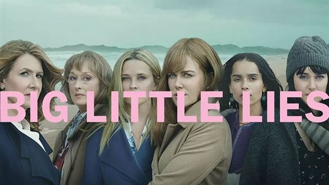

<section class="article-ocs py-5">
  <div class="container">
    <div class="row justify-content-center">
      <article class="col-sm-8">
        <h2>Big little lies</h2>
        <h5>Secrets, rumeurs et mensonges ne font pas bon ménage dans la petite ville de Monterey</h5>

        <p>
          « Big little lies » est une série composée de 14 épisodes, créée par David E. Kelley et diffusée à partir du 20 février 2017 sur OCS en France.
        </p>

        <div class="article_img">
          
        </div>

        <p>
          <strong class="emphase">De quoi ça parle :</strong> Trois femmes, trois mères, à la vie parfaite en surface se lient d’amitié de par leurs enfants. Mais lorsqu’un meurtre est commis durant une soirée caritative organisée par l’école, c’est le quotidien de la petite ville de Monterey qui va en être bousculé.
        </p>

        <p>

          <strong class="emphase">Mon avis :</strong> Les personnages sont loufoques mais attachants, la réalisation est topissime, l’histoire bien ficelée et le montage est superbe. Cette série s’inscrit dans la lignée de Working moms, avec un casting 4 étoiles : Reese Witherspoon, Nicole Kidman, Shailene Woodley et Meryl Streep vous font plonger dans les petits secrets et mensonges de cette petite ville de sorte que vous vouliez en savoir plus après chaque épisode.
        </p>

        <p>
          <strong class="emphase">Anecdote :</strong> La série est une adaptation du roman « Petits secrets, grands mensonges » de Liane Moriarty.
        </p>

        <iframe width="560" height="315" src="https://www.youtube.com/embed/YrMOOpXXy3o" frameborder="0" allow="accelerometer; autoplay; clipboard-write; encrypted-media; gyroscope; picture-in-picture" allowfullscreen></iframe>

        <p class="signature text-end"><strong>Angèle</strong></p>
      </article>
    </div>
  </div>
</section>

